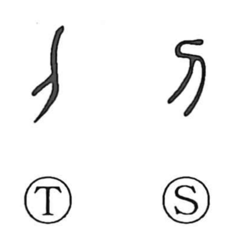

刀

Kun: katana | On: to
knife ・ sword ・ blade ・ edged tool
Explanation
A pictograph of a single-edged blade with a hilt, 刀 first names the knife or sword itself and, by extension, the whole class of edged implements. The Shuowen already treats it as a weapon, in harmony with 兵, a graph showing both hands gripping an axe (斤) and thus standing for arms. Specifically, 刀 denotes a one-edged blade, contrasted with 剣, the two-edged sword. Its iconic shape even entered the economy: in the Warring States period, knife-shaped copper coins circulated under names such as 刀幣, 刀布, and 刀貨.